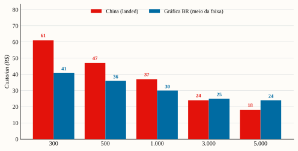

Da ficha técnica ao landed cost: onde produzir os dois planners, a que custo, e quando a importação da China passa a compensar.
| Decisão Fase 1 | Gráfica nacional |
|---|---|
| Crossover China | ~3.000–5.000 un |
| Landed cost | 2,0–2,7× o FOB |
| NCM (tributado) | 4820.10.00 |
Parâmetros: orçamento ~R$ 3 mil/SKU no 1º lote · prazo 30–60 dias · formato perpétuo (sem datas).
Dois motivos eliminatórios para a China no início:
⚠️ Correção vs. rascunho original. O rascunho colocava o ponto de virada da China em ~1.000 un. Com a conta refeita (AFRMM correto de 8%, não 25%; frete LCL real; ICMS-DF por dentro; e ICMS não creditável no MEI/Simples), o crossover real é ~3.000–5.000 un (conforme o tier de gráfica BR: ~3.000 contra gráfica premium; ~5.000+ contra offset de baixo custo)
[sourcing-tributos.md]. Isso reforça: ficar no Brasil por mais tempo.
Perpétuo é a decisão certa: estoque nunca vence, então micro-lote e pré-venda viram opções sem risco de encalhe.
| Fase | O quê | Volume | Rota | Capital |
|---|---|---|---|---|
| 0 — Validação | Lista de espera + golden sample + pré-venda | — | Gráfica BR (POD) | mínimo |
| 1 — 1º lote comercial | Micro-lote + reposição make-to-demand | ~54 → 300–500 un | Gráfica BR | ≤ R$ 3k/SKU |
| 2 — Escala | Reposição com margem maior | ≥ 3.000 un | China (importação formal) | CNPJ + Radar + capital |
O 1º lote não é o negócio — é experimento pago para provar demanda, gerar conteúdo de unboxing e financiar a Fase 1.
| Tier | Especificação | Custo/un¹ | Unidades por R$ 3k | Preço de venda sugerido |
|---|---|---|---|---|
| A — Premium | Capa dura + wire-o + soft-touch + hot stamping + elástico | R$ 50–60 | ~50–60 | R$ 120–150 |
| B — Intermediário | Capa dura + wire-o + laminação fosca, sem hot stamping/elástico | R$ 40–52 | ~58–75 | R$ 95–120 |
| C — Enxuto | Capa flexível premium (300 g + lam.) + espiral, miolo 90 g | R$ 18–30 | ~100–160 | R$ 70–95 |
¹ Faixa de mercado a confirmar nas 3 cotações — micro-lote (<100 un) sai no topo da faixa; cai com volume [a confirmar, sourcing-tributos.md].
Recomendação: Tier A ou B. Os nichos pagam premium e valoram acabamento; produto bonito gera conteúdo, que é o que vende (o conteúdo orgânico é o motor de aquisição — ver business plan §6). O Tier C maximiza unidades, mas dilui o posicionamento. Modelo financeiro usa custo micro-lote R$ 55 (Tier A/B), caindo a R$ 45 na reposição.
Alocação: R$ 3k por SKU. Como os dois compartilham plataforma (mesmo formato/papel/encadernação), padronizar reduz o MOQ efetivo e o custo (compra conjunta de insumos) — viabiliza rodar os dois em paralelo.
Padrão de mercado premium, ambos perpétuos. Padronizar formato/papel/encadernação entre os dois SKUs reduz MOQ efetivo e custo.
| Item | Especificação | Trade-off |
|---|---|---|
| Formato | A5 (148×210 mm) | Padrão premium e barato de enviar; menor aperta a grade de estudo |
| Encadernação | Wire-o, capa dura | Abre 180°/lay-flat (essencial p/ escrever); espiral é mais barata e menos premium |
| Miolo | ~180–200 pp, offset 90 g branco/marfim | 90 g evita transparência da caneta; 75 g vaza |
| Capa | Cartão empastado + soft-touch + hot stamping | Soft-touch escurece a cor → peça prova física; verniz localizado é alternativa mais barata |
| Acabamentos | Elástico + marcador de fita + cantos arredondados | Cada acabamento sobe custo e MOQ na China |
| Conteúdo | Grade de ciclo (não cronograma fixo) · registro diário (tópico, tempo, nº questões, % acerto) · revisão espaçada (24h/7d/30d) · tracker de simulados (banca/nota/% por disciplina) · edital verticalizado · visão semanal/mensal · página de constância | — |
| Item | Especificação | Trade-off |
|---|---|---|
| Formato | A5 (148×210) ou 17×24 cm | 17×24 dá mais espaço de tabela de cargas, mas encarece e pesa no frete |
| Encadernação | Wire-o, capa dura | Lay-flat inegociável na academia; durabilidade importa mais aqui |
| Capa | Cartão + soft-touch (ou PU) resistente | Ambiente de academia → priorize resistência a suor/atrito |
| Miolo | ~160–200 pp, offset 90 g | Igual ao P1 para ganho de escala na compra de papel |
| Conteúdo | Perfil/1RM e metas · periodização (mesociclo/semana/foco) · template de sessão (exercício, séries×reps, carga, RPE/RIR, descanso, notas) · registro de PRs · tonelagem/volume · marcadores de deload · métricas corporais · calendário semanal/mensal · páginas de protocolo (ladders/EMOM) | — |

| Dimensão | Gráfica BR | China | Vencedor |
|---|---|---|---|
| (a) Fidelidade ao que peço | 4/5 — acompanhamento próximo, português, revisão de prova rápida | 3/5 — ODM excelente, mas exige dieline, prova física e gestão de cor à distância | BR (no início) |
| (b) Praticidade | 5/5 — sem importação/despachante, MOQ de 1–100 un, pix | 2/5 — Alibaba, amostra, Incoterm, despachante, Radar/Siscomex, lead 30–60 dias | BR |
| (c) Preço (landed cost) | 3/5 — caro em volume baixo, melhora pouco na escala | 5/5 — domina só a partir de ~3.000 un | China (na escala) |
| (d) Risco | 5/5 — sem risco cambial/aduaneiro/lead; pouco capital em jogo | 2/5 — câmbio, qualidade à distância, desembaraço, lote grande imobilizado | BR |
[estimativa triangulada; BR a confirmar por orçamento]| Volume | China — regime | China FOB US$/un | China landed R$/un¹ | Gráfica BR R$/un² | Vencedor |
|---|---|---|---|---|---|
| 50–100 (piloto) | Remessa/courier | 3,50–4,50 | ~48–53 (II 60%) | R$ 40–65 | BR (claro) |
| 300 | Formal | 3,50 | ~R$ 61 | R$ 32–50 | BR |
| 500 | Formal | 3,20 | ~R$ 47 | R$ 28–45 | Empate |
| 1.000 | Formal | 3,00 | ~R$ 37 | R$ 22–38 | Disputado |
| 3.000 | Formal | 2,30 | ~R$ 24 | R$ 18–32 | China |
| 5.000+ | Formal | 1,80 | ~R$ 18 | R$ 18–30 | Empate/China |
¹ Importação formal, câmbio R$ 5,20, com a conta de §5. Em 300 un o landed sobe (R$ 61) porque o frete LCL e o despachante se diluem em poucas unidades. ² Faixa de gráfica digital/POD em volume baixo; offset a partir de 500 un.
Leitura central: o FOB chinês parece 3–4× mais barato, mas a carga de importação (≈ 2,0–2,4× o FOB, e 2,5–2,7× como MEI por o ICMS não ser creditável) faz o landed convergir com a gráfica BR até ~1.000 un. A China só abre vantagem clara a partir de ~3.000 un. Abaixo de ~500 un, a China força o regime de remessa com II de 60% — inviável para revenda.
[sourcing-tributos.md]| Componente | R$/un | Base |
|---|---|---|
| FOB | 15,60 | — |
| Frete marítimo LCL | 4,16 | rateio do contêiner |
| CIF (base de cálculo) | 19,81 | FOB + frete + seguro |
| (+) II 14,4% | 2,85 | × CIF |
| (+) IPI 9,75% | 2,21 | × (CIF + II) |
| (+) PIS/COFINS-Imp 11,75% | 2,33 | × CIF |
| (+) ICMS-DF 20% por dentro | 7,30 | maior componente |
| (+) AFRMM 8% | 0,33 | × frete marítimo |
| (+) Despachante + armazenagem | 2,00 | rateio |
| = Landed/un | 36,83 | ≈ 2,36× o FOB |
Alíquotas vigentes (confirmadas jun/2026) [confirmado]: II 14,4% · IPI 9,75% · PIS-Imp 2,10% + COFINS-Imp 9,65% (= 11,75%) · ICMS-DF 20% por dentro · AFRMM 8% sobre o frete marítimo (Lei 14.301/2022 — não 25%, como dizia o rascunho).
[confirmado].[confirmado].[a confirmar com despachante].Dados China (MOQ/FOB/lead) [estimativa, a confirmar por RFQ]: FOB planner A5 wire-o capa dura soft-touch custom US$ 1,80–3,99/un · MOQ 300–1.000 un (premium/custom 1.000–3.000) · lead 30–60 dias · amostra US$ 50–150 + frete aéreo (geralmente reembolsável) · frete LCL China→Santos US$ 700–900/embarque.
PRODUTO: Planner [Concurseiro / Treino] — perpétuo (undated)
FORMATO: A5 148×210 mm (final, fechado)
ENCADERNAÇÃO: Wire-o, capa dura (lay-flat 180°)
MIOLO: ___ páginas | offset 90 g | 4/4 cores (CMYK)
CAPA: cartão empastado | laminação soft-touch | hot stamping [cor]
ACABAMENTOS: elástico + marcador de fita + cantos arredondados
EMBALAGEM: 1 un shrink + master carton (informar pç/caixa)
ARTE: PDF/X-__ CMYK, 300 dpi, sangria 3 mm, fontes em curva
QUANTIDADES P/ COTAR: 100 / 300 / 500 / 1.000 / 3.000
PREÇO: FOB ___ e CIF [Santos/Itajaí] ___ | MOQ real ___
AMOSTRA: custo + prazo | LEAD TIME bulk: ___ dias
INCOTERM/PAGAMENTO: FOB | T/T 30/70 via Trade Assurance
| Semana | Ação |
|---|---|
| 1–4 | Construir audiência/lista de espera (conteúdo orgânico) + fechar conteúdo/miolo dos SKUs + pedir golden sample em 2–3 gráficas |
| 5–6 | Aprovar sample por escrito; fechar arquivos print-ready (PDF/X, sangria 3 mm, dieline da capa que a gráfica fornece) |
| 7–8 | Abrir pré-venda com fotos do golden sample (checkout + pix) → micro-lote + pré-pedidos |
| 9–12 | Rodar a tiragem; expedir; coletar feedback; decidir reposição |
A pré-venda só converte com audiência pré-construída (ver business plan §6) — por isso as semanas 1–4 priorizam conteúdo, não só produto.
[confirmado].Custos unitários e landed costs marcados como estimativa são faixas de mercado para dimensionar a decisão; devem ser confirmados por cotação formal (gráficas BR) e por despachante (importação China). Não constituem orçamento fechado. Detalhe e tabela de fontes em research/evidence/sourcing-tributos.md.
Marcações de confiança usadas no texto — [confirmado]: fonte primária datada e verificável · [estimativa triangulada]: ≥2 fontes convergentes, sem confirmação formal · [a confirmar]: faixa de mercado, não apresentada como fechada.
Alíquotas: FazComex/TIPI ADE COANA 001/2026; Gecex 852/2026 (não alterou o cap. 48); Lei 14.301/2022 (AFRMM 8%); Lei DF 1.254/96 (ICMS). China: Alibaba, Made-in-China (jun/2026). Detalhe datado em research/evidence/sourcing-tributos.md. A confirmar por despachante e 3 orçamentos.